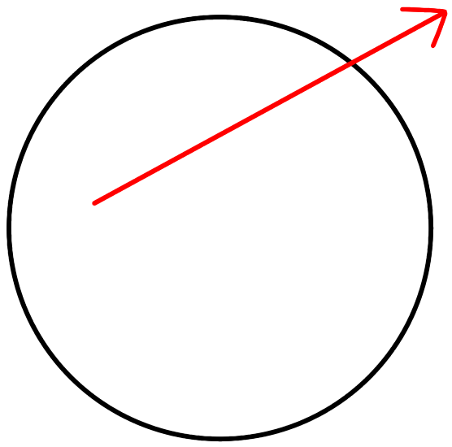
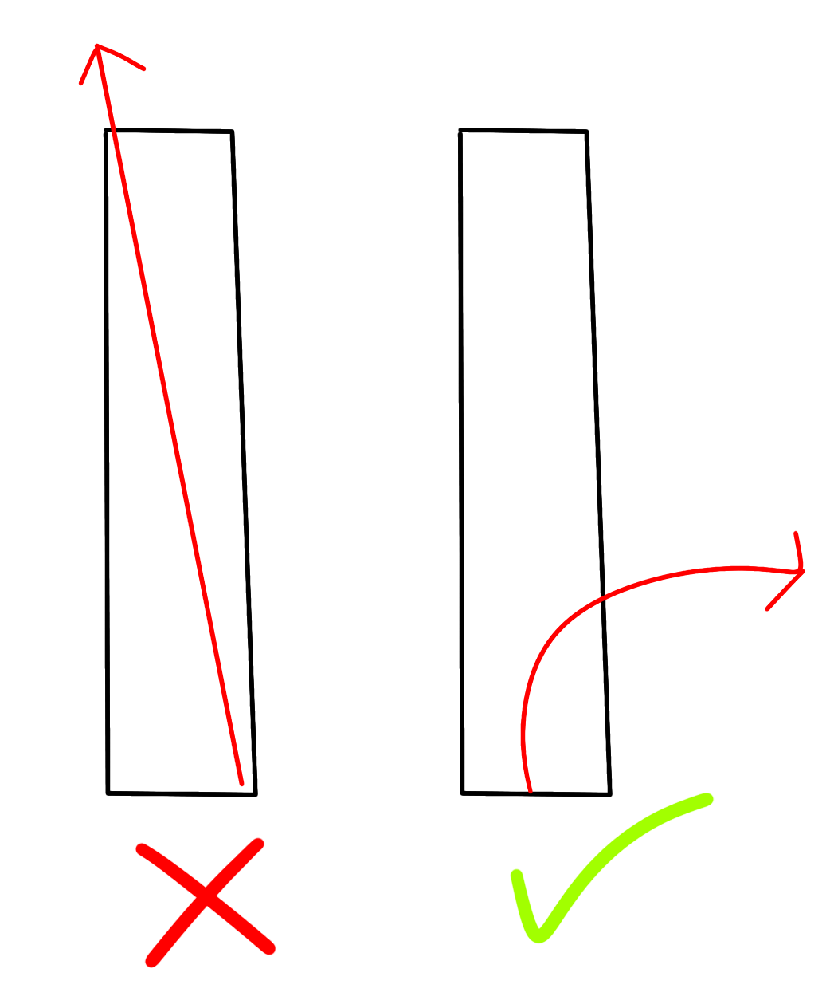

Running...
Generation 1
Draw the forest boundary below
Running...
Generation 1
A mathematician called Richard Bellman posed a question: Suppose you found yourself lost in a forest. You know the size and shape of the forest, but you don't know where you are or what direction you are facing. What path should you take to get out of the forest that minimizes the distance you need to walk in the worst case?
For example, if you were in a circular forest, the best path is simply a straight path.
But if you were in a long, straight and narrow forest, going straight might not be a good idea, since the worst case is going from one end of the forest to the other. In that case, you might want to take a curving path, so that even in the worst starting position and direction, you get out fairly quickly.
Try creating your own forest in the square above! My algorithm will try and find the best path for that forest. I use a genetic algorithm to search for the path. While the program doesn't find perfect solutions, it does come up with good solutions most of the time.
See if you can come up with a forest shape where the best path isn't just a straight line!
(Note: the smaller the forest and the less sides it has, the quicker the program will run)